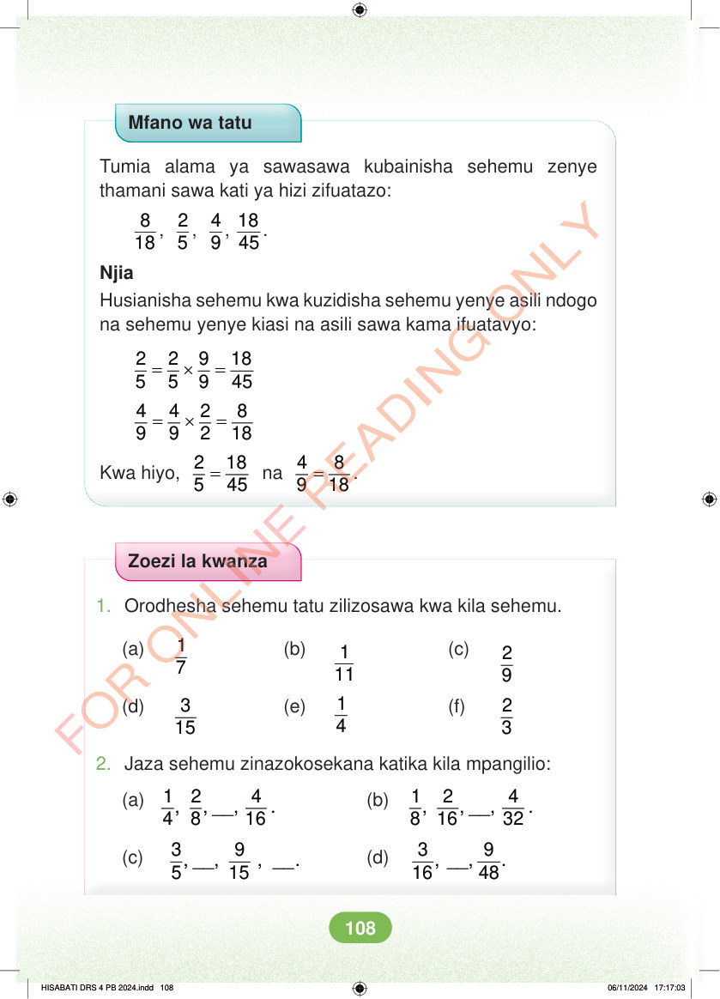

Mfano wa tatu Tumia alama ya sawasawa kubainisha sehemu zenye thamani sawa kati ya hizi zifuatazo: 8 18 , 2 5 , 4 9 , 18 45 . Njia Husianisha sehemu kwa kuzidisha sehemu yenye asili ndogo na sehemu yenye kiasi na asili sawa kama ifuatavyo: = × = 2 2 9 18 5 5 9 45 = × = 4 4 2 8 9 9 2 18 Kwa hiyo, = 2 18 5 45 na = 4 8 9 18 . Zoezi la kwanza 1. Orodhesha sehemu tatu zilizosawa kwa kila sehemu. (a) 1 7 (b) 1 11 (c) 2 9 (d) 3 15 (e) 1 4 (f) 2 3 2. Jaza sehemu zinazokosekana katika kila mpangilio: (a) 1 2 4 , , __, . 4 8 16 (b) 1 2 4 , , __, . 8 16 32 (c) 3 9 , __, , __. 5 15 (d) 3 9 , __, . 16 48 HISABATI DRS 4 PB 2024.indd 108 HISABATI DRS 4 PB 2024.indd 108 06/11/2024 17:17:03 06/11/2024 17:17:03